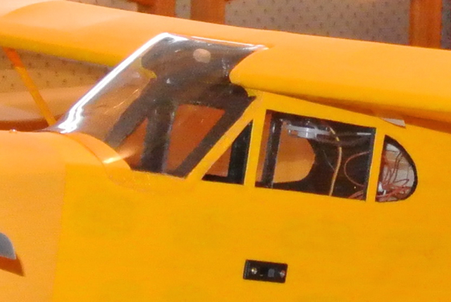
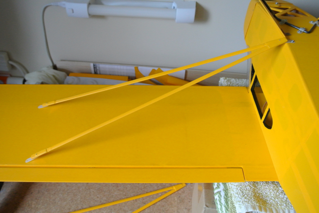
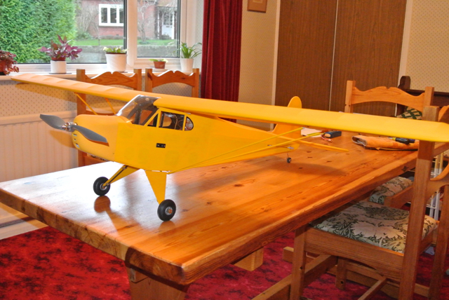
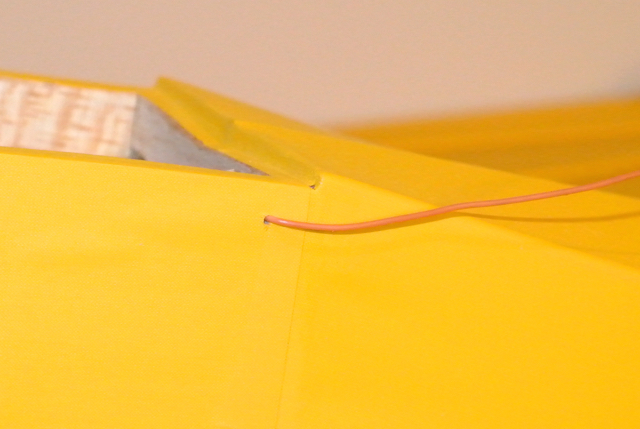
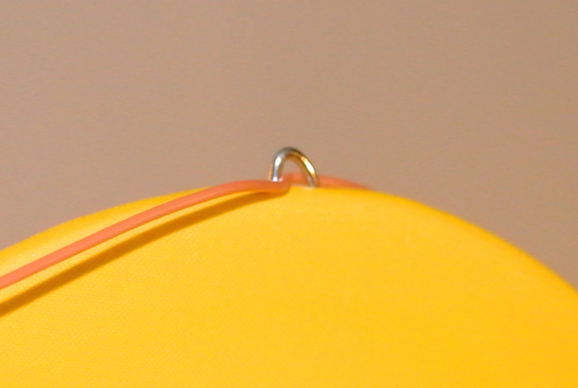
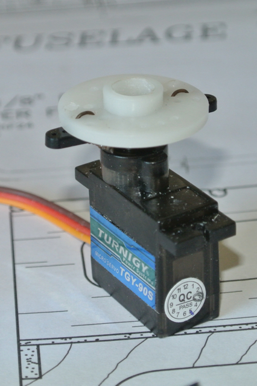
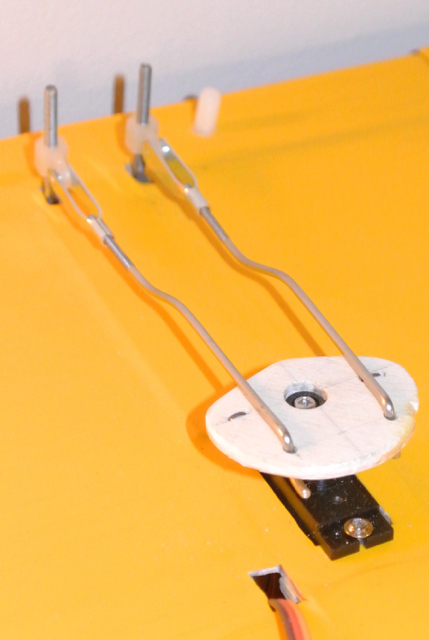
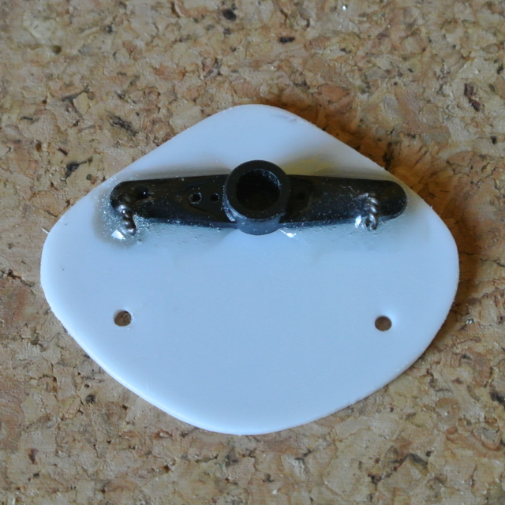
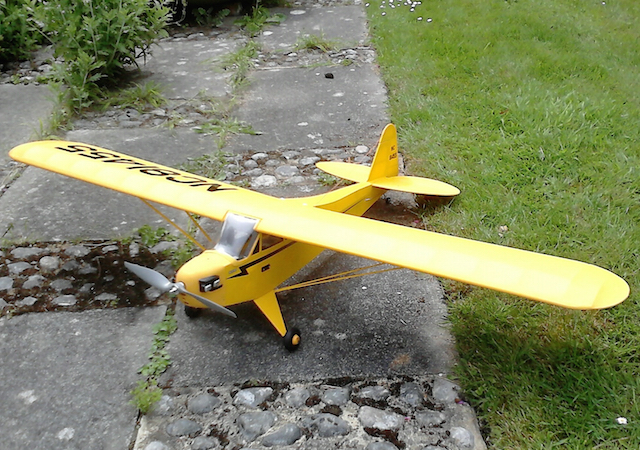

Radio Controlled Aircraft
I've had little time to work on my model for the last two months. As we move deeper into winter there is less incentive, but trips to visit our children (Rotterdam and California), followed by Christmas and the New Year, have kept us busy.
Windshield
My first job was to fit the folded windshield and the two side windows. The moulded clear plastic was not a good fit. I tried some clear plastic book covering material, but the adhesive was not strong enough to hold the windshield in place. So I bought some canopy glue, fixing firstly the top and front and then the sides. Plenty of masking tape was needed to pull the windshield to the profile of the fuselage. I used a cocktail stick to apply the glue to the side edges of the windshield once the top and front had set. The result is not very pretty. I will need to paint over the edges when I decorate the plane. The side windows, being flat, were easy to fix. Only the rectangular windows are filled, the triangular and D-shaped windows being left open to allow ventilation.
Cowl
Although I intend to wait until I have flown the plane before adding the detail decoration (dummy engine, wheel hubs, side flashes, etc.), the white cowl looked just too much of a contrast to the yellow covering. So I bought a can of Cub Yellow spray paint and gave it two coats. Strangely, the colour matches well in daylight, but is quite a bit darker in artificial light.
Wing Struts
I had previously made the wing struts from the supplied sticks, shaping them into an aerofoil section, joining the sticks at one end and reinforcing the ends with glass fibre and epoxy. I also covered them with Solartex and attached straps, made from nylon strip, to the three ends of each wing strut using small self-tapping screws, cut off to the thickness of the strut. Both the fuselage and the wing have small plywood reinforcing pieces to allow the straps to be screwed on. You can imagine my surprise when, having secured the fuselage end of the strut, the wing ends completely missed the reinforcing pieces; the struts were much too long. I checked the struts and the plywood pieces against the plan and they were correct. There could not be a problem with the wing dihedral, since it would require a ridiculous dihedral to make the struts fit. So I shortened both ends of the struts so as to retain enough glass fibre reinforcing. In fact, the forward strut needed to be shorter than the aft strut. I will paint the cut ends later.
Battery Mount
The design for this Piper Cub dates from the year 2000 and technology has moved on a bit since then. In particular, battery sizes, for the same capacity, have come down. I had bought two Turnigy 30-40C 2200 mAh Li-Po batteries, that are considerably shorter than the battery fixing points on the plan. In fact, the battery did not fit on both the bottom velcro pad and the end-stop pad. Rather than add new battery mounts to the fuselage I decided to make a small frame that would attach via velcro to the end-stop, but would allow the battery to slide into it. This would not only compensate for the shorter battery, but it would also allow me to adjust the position of the battery so as to help balance the plane.
Balancing
I had two things that I could move with the fuselage in order to adjust the for-aft position of the C of G; the servo tray containing elevator and rudder servos and the battery. In practice I could move the ESC slightly, but I doubt that would be very useful since it is not very heavy. I stuck pieces of masking tapes under the wings and marked the recommended position of the C of G. Supporting the model on two off-cuts of wing trailing edge, I was able to lift it fairly precisely at the required point; it was tail heavy. I started by moving the servo tray as far forward as practical (I had not yet attached the connecting rods to the servos) and then moved the battery forward a little until the fuselage was horizontal when the model was lifted at the C of G points.
Aerial (Antennae)
I am using a 35 MHz radio system and so needed to fix the one meter long antenna (1/8th wavelength is 107 cm). The instructions with the kit tell you to route the antenna out the side of the fuselage, just under the trailing edge of the wing. So I drilled a small hole, passed the antenna through it and taped the part remaining inside the fuselage to the side of the fuselage so that it does not interfere with the servos.
The instructions also suggested anchoring the antenna to the top of the fin with a rubber band and a T-pin. Then it says not to shorten the antenna, but to leave it trailing behind the model. So I made a small staple from a piece of T-pin, pushing that into the top of the rudder. On the Cub, the rudder includes the top section of the fin, but hopefully there will not be a problem when the rudder moves.
Connect Elevator and Rudder to Servos
 Clearly my attempt to use a spare servo wheel to extend the arm did not produce enough movement. So I made a new wheel from an off-cut of plywood, following the template on the plan, and initially wired it to the servo arm. Of course, the existing connection rods were now too short and so I had to buy some more. The originals were imperial sized (being from a US kit) and were 1.83 mm (15 SWG or 18 AWG), but I could only buy metric versions (M2), which are 1.7 mm in diameter. Therefore I had to buy new clevises as well. After all that, the ailerons still only moved 3/8" up and 1/4" down rather than the specified 1/2" up and 3/8" down!
So I experimented with some 1mm thick plastic sheet. I made the offset angle 45 degrees (rather than the ~50 degrees on the plan) so as to slightly reduce the differential and then pushed the holes for the connecting rods out a further 5mm. Again, I initially wired the 'wheel' to the servo arm so as to test it, and it worked! A slightly generous 1/2" up and 3/8" down on both ailerons. So I added some epoxy around the arm and the wire fixings.
I had to make my own wheels since I found that different makes of servo have a different number of splines on the shaft and the local model shop only stocks arms/wheels for the expensive servos that they stock.
Ready to Fly
Now the model is, hopefully, capable of flying. So I will wait for some fine (and warmer) weather and try flying it before making it 'pretty' by adding the fake engine to the cowl, the wheel hubs and the stripes and numbers.
Decorating
After the Cub's first few flights it was time to add the 'decoration'. I also had to repair the motor mount (see the final entry here). In so doing, I also added some ply braces at right angles to the existing pieces that connect the front and rear of the mount. Hopefully this will make the mount more robust.
I then added the decoration in the form of:
- Wheel hubs, painted yellow and with 'CUB' stickers (provided in the kit);
- Fake engines, Plastic mouldings painted black with the cylinder heads silver;
- Yellow paint around the windshield to make it look neater;
- A flash along both sides of the fuselage, cut from black Solartrim;
- Registration number on both sides of the rudder, cut rather badly from Solartrim;
- Large registration number, cut more uniformly from black Solartrim, and applied to the top and bottom of the wing.
For the numbers and letters, I peeled the backing off the Solartrim under water (with a few drops of washing-up liquid) and then tried to 'float' them into place. This was not as easy as it sounded on the instructions with the Solartrim, but I used masking tape, a length of cotton and a card spacer to provide guides to help position the pieces.